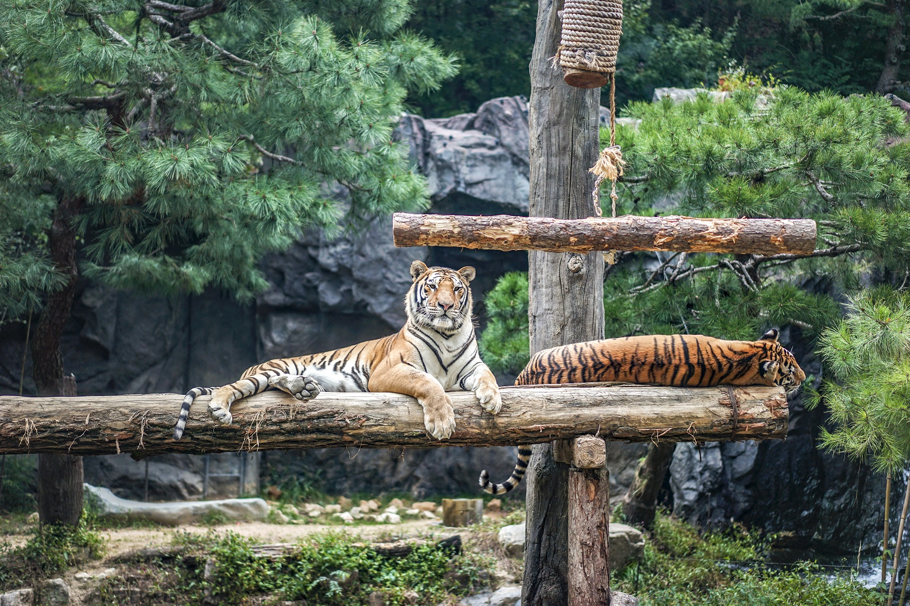

주토피아
동물원
- 버드파라다이스
새들의 낙원 버드 파라다이스!
전설의 새 극락조, 춤추듯 우아한 플라밍고 등 여러 종의 아름다운 새들을 만나보실 수 있습니다.- 이용안내
- * 동물의 건강 및 기상 상황에 따라 일부 동물은 전시하지 않을 수 있습니다.
- 뿌빠타운

특별한 동물 친구들이 살고 있는 숲 뿌빠타운!
새로운 친구 카피바라와 왈라비를 가까이에서 볼 수 있는 카피바라 동산과
야외 놀이터에서 놀고 있는 나무늘보와 라쿤의 모습까지 만나보세요!- 이용안내
- * 동물의 건강 및 기상 상황에 따라 일부 동물은 전시하지 않을 수 있습니다.
- 슈퍼윙스애니멀톡
멸종 위기종인 새들이 행복하고 건강하게 살아갈 수 있도록
사육사가 새들을 돌봐주는 이야기에 여러분을 초대합니다.- 이용안내
- -100% 사전 예약제 레니찬스로 운영됩니다. (현장 줄서기 불가)
- -레니찬스 신청 후 예약된 시간에 이용하실 수 있으며 예약 마감 시 이용이 불가합니다.
- -코로나 백신 접종완료 증명서 소지자에 한해 입장 가능합니다.
- 알버트스페이스센터
최초로 우주에 간 원숭이 알버트의 후손들이 함께 살고있는 알버트 스페이스 센터!
이 곳에서는 알버트의 후손들이 어떻게 살고 있을까요? 알버트 스페이스 센터에서 만나보세요!- 이용안내
- -100% 사전 예약제 레니찬스로 운영됩니다. (현장 줄서기 불가)
- -레니찬스 신청 후 예약된 시간에 이용하실 수 있으며 예약 마감 시 이용이 불가합니다.
- -코로나 백신 접종완료 증명서 소지자에 한해 입장 가능합니다.
- 타이거밸리
국내에서 가장 가까운 거리에서 한국호랑이를 만나볼 수 있는 곳!
타이거밸리가 시원한 폭포와 연못, 자작나무 숲으로 백두대간 한국호랑이의
서식지를 재현했어요 한국의 기상이 살아있는 멋진 한국호랑이를 만나보세요!- 이용안내
- ※ 동물의 건강 및 기상 상황에 따라 전시 시간이 변경될 수 있으며 전시되지 않을 수 있습니다.
- 토토와물개섬
넘치는 해양쓰레기 때문에 사라져가는 물개섬의 물개를 보존하기 위해
고군분투하는 물개박사와 토토
물개들이 펼치는 멋진 퍼포먼스와 사육사들이 들려주는 재밌는 이야기 속으로 여러분을 초대합니다!- 이용안내
- -100% 사전 예약제 레니찬스로 운영됩니다. (현장 줄서기 불가)
- -레니찬스 신청 후 예약된 시간에 이용하실 수 있으며 예약 마감 시 이용이 불가합니다.
- -코로나 백신 접종완료 증명서 소지자에 한해 입장 가능합니다.
- 판다월드
동물들의 생태환경과 유사하게 자연 친화적으로 조성된 판다가 살고 있는 집
국내 최초로 태어난 아기판다 '푸바오'를 만나러오세요!- 이용안내
- -100% 사전 예약제 레니찬스로 운영됩니다. (현장 줄서기 불가)
- -레니찬스 신청 후 예약된 시간에 이용하실 수 있으며 예약 마감 시 이용이 불가합니다.
- -코로나 백신 접종완료 증명서 소지자에 한해 입장 가능합니다.
- 판타스틱윙스
카리스마 넘치는 하늘의 제왕 매와 독수리!
사육사과 환상의 파트너쉽으로 펼쳐지는 익사이팅한 비행!
개구쟁이 아프리카 뿔닭들과 우아함의 상징인 공작들의 아름다운 비행!
알록달록 앵무새와 평화의 상징 비둘기들이 만들어내는 환상적인 비행!- 이용안내
- * 퍼포먼스는 기상 및 현장 상황에 따라 예고없이 취소 및 변경될 수 있습니다.
- * 운영시간은 홈페이지-이용정보-운영시간을 참고 부탁드립니다.
- 펭귄아일랜드

남아프리카에서 서식하는 자카스 펭귄! 눈 앞에서 물 속을 수영하는 모습과 아장아장!
걸음걸이가 귀여운 펭귄들의 모습까지 모두 만날 수 있어요.
국내 최대규모의 전시장에서 파란 하늘을 배경으로
시원하게 물 속을 날아다니는 펭귄들을 만나보세요!- 이용안내
- * 동물의 건강 및 기상 상황에 따라 동물이 전시되지 않을 수 있습니다.